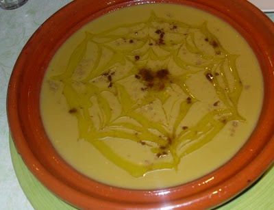

Bisara

Description :
The Bissara is a traditional Moroccan bean soup usually garnished with
olive oil and cumin. The taste is truly distinct and delicious, beloved by all.
Ingredients
- 150 g de fèves cassées
- 4 gousses d' ail
sel
- 1 cuillère de curcuma
- 1 cuillère de paprika
- 1 cuillère de gingembre
- 3 cuillère de cumin
- 6 cuillère d'huile d'olive